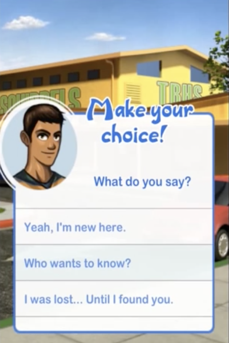

For my nonlinear narrative, I am making a simple choose your own adventure experience. I want to make a fun, adventurous, and light hearted environment. I plan on making some After Effects motion graphics from landscape photos I have taken and using these animations to build the world. I want to combine my love for travel and photography in this adventure.
My inspiration from this project comes from choose your own adventure iOS games. In middle school, I used to be really into the games “Surviving High School” and “Cause of Death” made by EA. In both games, you had a decision based game that went with a story that developed with your own choices. Every time an episode came out for either game, I would play it multiple times until I figured out all of the different possible endings.

My story is pretty simple right now. You start off in a forest, with no idea where you are. A series of choices can lead you to five different happy destinations. I plan on using Javascript to hover play videos and hide smaller clues around each landscape scene. Here are two examples of the photos I will animate:
The left photo was taken next to the north side of the Golden Gate Bridge overlooking San Francisco across the water.
The right photo was taken in Maui, HI on a hike to a waterfall I went on over the summer.
When you hover over the possible choices to go to the next pages, the looping gifs/ videos will play. There will be css transitions between each page ie. fades and swipes. There will be a few hidden links that will move when you hover over them.